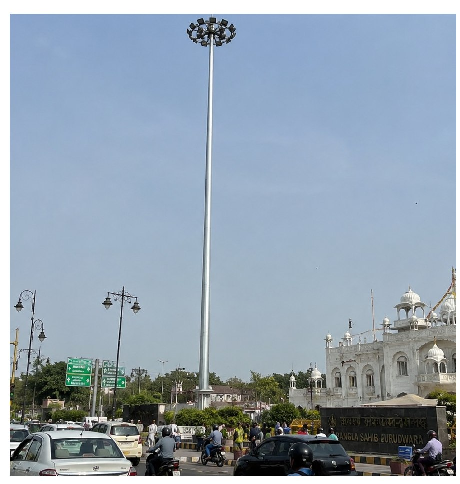
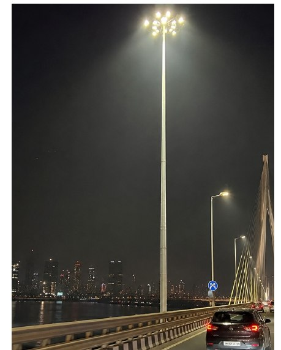
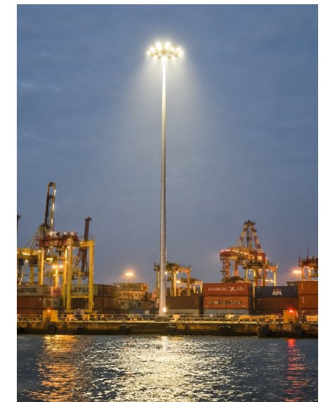
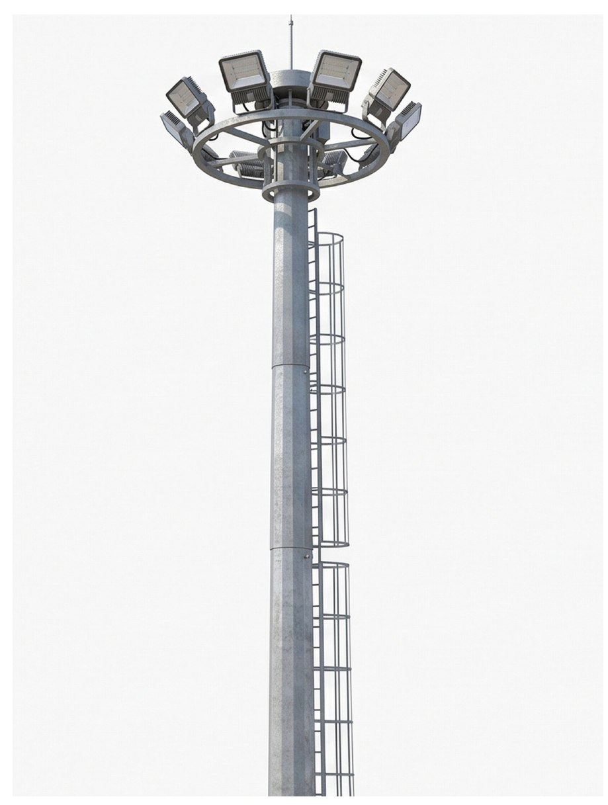

Product 01: High Mast Systems
High Masts, Engineered for Extremes
BPP high masts range from 12.5 m to a monumental 70 m+, in configurations carrying 6, 9, 12, 18, 24, 32 or 112 light fittings. Every mast is engineered to IIT Kanpur’s Wind Velocity Certification standard and finished in our own hot-dip galvanizing plant in single-dip sections up to 14 m long.
Applications
- Street & highway lighting
- Oil depot & refinery lighting
- Stadium & apron lighting
- Port & dockyard lighting
- Telecom / cellular networks
- Wind turbine installations



Standard High Mast Range
Luminaire options: 6 / 9 / 12 / 18 / 24 / 32 / 112 fittings. Masts above 30 m, alternative luminaire counts and non-standard configurations are engineered to order; please share the site wind zone and luminaire schedule with your enquiry.
Engineering Advantages
- Minimum wall thickness never less than 4 mm: against the 3 mm typical of imported masts.
- Single longitudinally welded mast available on request.
- Balanced 3-point suspension lantern carriage for true, even lowering.
- Double-drum winch with compensating disc: carriage tilt is straightened without lowering the carriage ring.
- 3-pulley system with guide to prevent wire and cable slip-off in any position.
- Torque limiter and limit switch for automatic motor trip-off during docking of the lantern carriage.
- Telescopic slip joints with overlap of 1.5 × diameter at every site joint.
- Hot dip galvanized in a single dip in our in-house plant, up to 14 m long sections, 86 micron minimum.
- Anti-vandalism base door, 1200 × 250 mm, with wooden stack board and 150 × 150 mm cable termination box.

| Material construction | BS EN-10025 |
| Metal protection | Hot dip galvanized |
| Galvanizing thickness | 86 micron minimum |
| Joint type | Telescopic slip joint |
| Overlap at site joint | 1.5 × diameter |
| Sheet source | TATA / SAIL high-tensile |
High Mast Technical Parameters
12-luminaire configuration. All dimensions in mm unless stated otherwise.
| Parameter | 30 m | 25 m | 20 m | 16 m | 12.5 m |
|---|---|---|---|---|---|
| Make | BPP | BPP | BPP | BPP | BPP |
| Material construction | BS EN-10025 | BS EN-10025 | BS EN-10025 | BS EN-10025 | BS EN-10025 |
| Cross section (polygon sides) | 20 sided | 20 sided | 20 sided | 20 sided | 20 sided |
| Thickness (mm) | 5, 4, 4 | 5, 4, 4 | 4, 3 | 3, 3 | 3, 3 |
| Length of individual sections | 10,500 ×3 | 8,750 ×3 | 10,300 ×2 | 8,300 ×2 | 6,500 ×2 |
| Base dia. / top dia. | 540 / 150 | 460 / 150 | 410 / 150 | 360 / 150 | 340 / 150 |
| Type of joints | Telescopic slip | Telescopic slip | Telescopic slip | Telescopic slip | Telescopic slip |
| Overlap at site joint | 1.5 × dia. | 1.5 × dia. | 1.5 × dia. | 1.5 × dia. | 1.5 × dia. |
| Metal protection | Hot dip galv. | Hot dip galv. | Hot dip galv. | Hot dip galv. | Hot dip galv. |
| Galvanization (min.) | 86 micron | 86 micron | 86 micron | 86 micron | 86 micron |
| Opening door at base | 1200 × 250 | 1200 × 250 | 1200 × 250 | 1200 × 250 | 1200 × 250 |
| Locking / door | Anti-vandalism | Anti-vandalism | Anti-vandalism | Anti-vandalism | Anti-vandalism |
| Stack board inside | Wooden base board | Wooden base board | Wooden base board | Wooden base board | Wooden base board |
| Cable termination box | 150 × 150 | 150 × 150 | 150 × 150 | 150 × 150 | 150 × 150 |
| Base plate diameter | 740 | 670 | 570 | 520 | 520 |
| Base plate thickness | 30 | 25 | 25 | 25 | 20 |
| Anchor plate diameter | 740 | 670 | 570 | 520 | 520 |
| Anchor plate thickness | 4 | 4 | 4 | 4 | 4 |
| Template | As anchor plate | As anchor plate | As anchor plate | As anchor plate | As anchor plate |
| Weight approx. (kg) | 1200 | 1000 | 800 | 600 | 450 |
Weight is approximate and inclusive of base plate, door and head frame. Configurations other than the 12-luminaire standard, and heights above 30 m, are engineered to order.